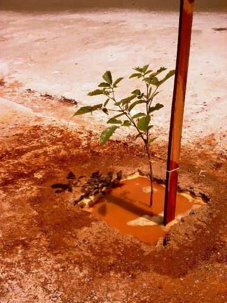

|
|
Há
vários métodos de como se plantar uma árvore.
Abaixo
estão os métodos que julgamos mais simples e eficientes.
-
Em lugares
com terreno aberto (canteiros centrais, praças, etc.):
|
|
1º
-
Escolha a muda, que deve ter no mínimo 1 metro de altura.
|
|
2º
-
Separe uma estaca (ex.: caibro), que tenha altura maior do que a altura
da muda.
3º
-
Abra o aceiro com um raio de, no mínimo, 50 cm,
para que haja bastante
espaço para a árvore se desenvolver. |
|
4º
-
Com uma cavadeira ou enxadão cave um buraco de, no mínimo,
50 cm de profundidade, ou cave até uma profundidade que cubra o torrão
da muda.
Nunca deixe o torrão para fora do buraco ou as raízes expostas!
|
|
5º
-
Coloque esterco de gado ou de cavalo no fundo do buraco,
que irá auxiliar a árvore no início de seu desenvolvimento.
6º
-
Coloque a muda no buraco e preencha as laterais com terra solta, até
a superfície. Nunca preencha as laterais com torrões ou pedras,
pois
as raízes precisam de terra solta para iniciar o seu crescimento.
Obs.:
Se a muda for plantada com o saquinho ou com uma lata,
deve-se, impreterivelmente, retirar o fundo,
para que as raízes possam se desenvolver normalmente para baixo. |
|
7º
-
Com a ajuda de uma marreta ou martelo, fixe a estaca lateralmente à
muda,
onde a terra está solta. Prenda uma fita para evitar que a
árvore entorte.
Nunca fixe a estaca no torrão da muda, pois
irá danificar as raízes!
|
|
8º -
Regue o aceiro com bastante água (sem adubos).
Lembre-se de fazer isso a
cada 3 dias, nos
meses de seca,
e a cada semana, nos meses que apresentam chuvas regulares.
É
muito importante regar a muda nos três primeiros meses após
o plantio da árvore,
até que ela se fixe bem no solo, pois
é o período no qual a árvore
se torna frágil com qualquer sinal de falta de
água. |
-
Em calçadas
de vias publicas:
|
|
1º - Escolha
a muda, que deve ter no mínimo 1 metro de altura,
e separe uma cavadeira
manual, uma talhadeira,
barbante, alicate e uma marreta.
2º -
Separe uma estaca (caibro), que tenha altura maior do que a altura
da muda. |
|
3º
-
Corte a calçada com uma marreta e uma talhadeira,
lembrando de fazer um quadrado ou um círculo de, no mínimo,
40cm de diâmetro.
|
|
4º
-
Se a árvore que vai ser plantada tiver raízes fortes
(que costumam
quebrar a superfície da calçada),
é indicado inserir
no buraco uma manilha de concreto ou de plástico,
de tamanho coerente com o caule da árvore quando adulta.
Assim,
as raízes da árvore descerão e sairão horizontalmente,
no fundo da manilha.
Isso irá impedir o rachamento ou o soerguimento da calçada.
Veja no link "Plante uma Árvore !", os tipos de árvores indicadas
para serem plantadas em calçadas. |
|
5º -
Abra o buraco, com a ajuda da cavadeira manual,
até a profundidade
correta para
inserir a manilha,
colocando, posteriormente, a muda.
|
|
6º
- Após
terminado o buraco, insira a manilha e coloque um pouco de esterco de gado
ou de cavalo
no fundo do buraco.
Isso irá ajudar a árvore no início
de seu desenvolvimento.
Não utilize adubos granulados
no momento do plantio, ele pode matar a sua muda!
|
|
7º -
Coloque a muda no buraco, juntamente com a estaca,
e preencha as laterais com terra solta até a superfície.
Nunca preencha as laterais com torrões ou pedras,
pois
as raízes precisam de terra solta para iniciar o seu crescimento.
Obs.:
Se a muda for plantada com o saquinho ou com uma lata,
deve-se, impreterivelmente, retirar o fundo,
para que as raízes possam se desenvolver normalmente para baixo. |
|
8º
-
Amarre o barbante na estaca e passe-o em volta da muda (sem amarrar apertado),
para dar suporte à muda no início de seu crescimento.
Dê
primeiro um nó cego na estaca, e depois dê um nó cego, porém folgado,
em torno do caule da muda, para que com o crescimento ele não seja
estrangulado.
|
|
9º
-
Por fim, regue a muda com bastante água.
Periodicamente
regue a muda até ela atingir 1 metro de altura,
dando mais ênfase
nos períodos de secas. |
|

|
|
Pronto,
a muda está plantada!
|
Tudo certo!
Agora que você já aprendeu como plantar uma árvore,
basta
saber onde conseguir as mudas de graça.
Geralmente,
em quase todas as cidades há um Horto Municipal,
que fornece estas
mudas gratuitamente.
Informe-se!
Para
saber qual o tipo de árvore plantar
acesse
o link "Plante uma Árvore!" ao lado.
|